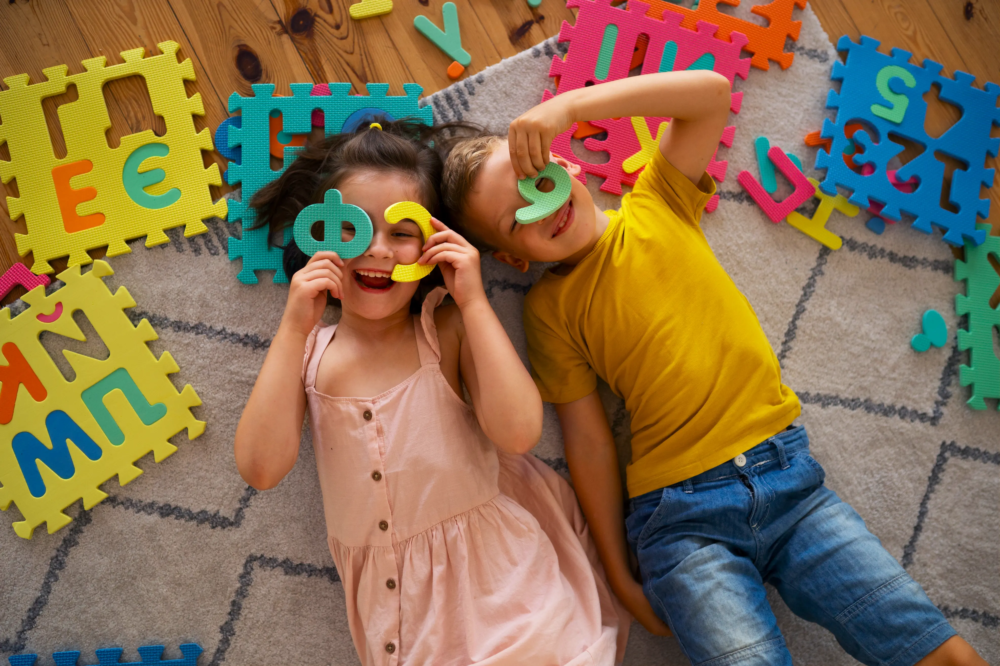

Licenciatura en Educación Infantil
Un recorrido cronológico y reflexivo sobre cómo se ha concebido a los niños y niñas a lo largo de la historia, las diferentes perspectivas y su impacto en la educación actual.

INTRODUCCIÓN
Este sitio web es un espacio dedicado a explorar cómo ha cambiado la forma de entender a los niños y las niñas a lo largo del tiempo. A través de esta plataforma, se busca explicar que la idea de "infancia" no siempre ha sido la misma, sino que ha evolucionado dependiendo de la época y el lugar.
NUESTROS PROPÓSITOS
Explicar cómo ha cambiado el concepto de niño y niña desde la Edad Antigua hasta la Modernidad.
Mostrar las distinciones entre términos como niño, niña, niñez e infancias, resaltando que no existe una sola forma de vivir esta etapa.
Describir cómo el entorno en el que crece un menor influye en sus derechos y en sus oportunidades de expresión.
Reconocer la importancia de ver a los niños y niñas como personas con voz propia y realidades diversas.
Servir como un archivo digital que organiza los conocimientos adquiridos en cada uno de los cuatro escenarios de estudio.
TEMÁTICAS DEL CURSO
Explora los diferentes temas abordados en cada corte de la asignatura "Infancias, Historias y Perspectivas".
Análisis crítico de las primeras concepciones sobre la infancia desde la antigüedad, reflexionando sobre la evolución de la noción de niñez.
Entrar al Escenario 1El proceso de institucionalización e identificación de la niñez como una etapa independiente de la vida adulta con sus propias lógicas.
Entrar al Escenario 2Las infancias contemporáneas. El reconocimiento internacional como sujetos de derechos y el papel de la educación inicial hoy.
Entrar al Escenario 3Análisis y propuestas sobre los retos actuales que enfrentan las infancias y cómo los educadores deben responder de forma activa e inclusiva.
Entrar al Escenario 4